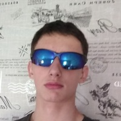

My CV

- Kirill Gabov
- kirakimyra@gmail.com telegram: @microchel
- My main goal is self-development. I always want to learn a lot and put my knowledge into practice. I want to turn my programming experience into creativity. For me it is important that my time be spent with pleasure even when I do work
- I have experience programming in Python in the field of statistics.
- Participation in Hackathons:
- HackUniversity
- /beCoder (DataScinece winner)
- Courses on https://stepik.org/ with perfect certificate: Python programming, Basics of statistics.
- Basic English (Russian University level).